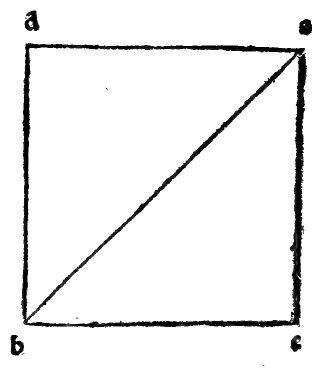

CAPITOLO LXVII¶
Commo dele laterate aperto se mostra ciascuna essere subtripla ala sua colonna.

Nella 6. del 12. excelso Duca el nostro philosopho conclude el corpo seratile el quale e la prima specie dele colonne laterate. commo desopra fo detto quello essere diuisibile in tre pyramidi equali dele quali le basi cadauna fia triangola. E per consequente el dicto corpo fia triplo a cadauna de quelle. E con questa euidentia se mostra ogni pyramide esser subtripla al suo chelindro ouer colonna.
E de qua nasci la regola sopra data che dela quantità de tutta la colonna se prenda el Y3 la qual cosa nelle colonne rectilinee chiaro appare, peroche tutte quelle sonno resolubili in tanti corpi seratili in quanti trianguli se possino le lor basi distinguere, e de tanti sempre quelle tali sonno diete esser composte commo in la 8 del 12 fia prouato. Onde la colonna quadrilatera, dela quale la basa per esser quadrilatera, se resolue indoi triangoli protrahendo in quella la linea dyagonale. cioedavnangolo oppositoalaltro.
E sopra questi tali triangoli se ymaginano e anco actualmente se fa doi corpi seratili. E perche ognuno fia triplo ala sua pyramide sequita ambedoi quelli esser tripli ad ambedue le suoi pyramidi. Ma ambedoi li seratili sonno tutta la colonna quadrilatera, adonca le doi pyramidi deli doi seratili sonno el 73 de tutta dieta colonna. E queste doi pyramidi sonno vna totale aponto de tutta la colonna, per esser quelli le doi parti equali e integrali de dieta colonna. Si che la regola data non pò fallire per tutte le ragioni adductc.
E similmente el medesimo effecto se manifesta in cadaunaltra colonna laterata commo anco dela 3. lor specie detta pentagona de laquale la basa fia resolubile in 3. triangoli, e per quello se dicto tutta la colonna in 3 corpi seratili. deli quali ognuno e triplo ala sua pyramidi. e per questo tutti 3 son tripli a tutte 3. lor pyramidi. e queste insiemi voglian dire vna de tutta la colonna, si commo li lor 3 seratili refanno tutta la colonna. E cosi el medesimo in tutte laltre discorrendo.
E la dieta resolutione de basi in triangoli in la 32. del primo se demostra. Doue se conclude ogni figura poligonia cioè de più angoli e lati essere sempre resolubile in tanti triangoli quanti sonno li suoi angoli ouer lati men doi. verbi gratia. la quadrilatera ha 4 angoli e per consequente 4 lati, epsa fia resolubile in doi triangoli almanco cioè ala menore sua resolutione che apare se in quella se tiri vna linea recta da vno deli suoi angoli oppositi a laltro. commo qui in la figura se vede del tetragono abcd. el qual fia diuiso in li doi triangoli abd. e bcd. dala linea bd. laquale in larte fia detta dyagonale e anco dyametro.
E cosi la pentagona se resolue almanco in 3 triangoli, cioè per regola generale in doi triangoli meno che non sonno li suoi angoli ouer lati laqual cosa aparera se da vno (qual sia) deli suoi angoli ali doi altri oppositi se menino doi linee recte. Commo qui in la figura abcde. pentagona descripta fia facto. Nella quale del suo angolo a ali doi oppositi e. e d protraete le linee fia resoluta in li 3 triangoli abc. acd. e ade. E ognuna de diete linee nellarte se chiama corda de langolo pentagonico. E cosi le exagone se resoluano in 4 triangoli et sic in reliquis.
Si che molto excelso Duca siamo obligati agli antichi che con lor vigilie le menti nostre hanno dilucidate maxime al nostro Megarense Euchde che insiemi ordinatamente recolse deli passati e dele suoi agionse in queste excel entissime discipline e scientie mathematici con tante diligenti suoi demostrationi. commo apare in tutto suo sublime volume. El cui ingegno non humano ma diuino se dimostra. Maxime nel suo decimo nel quale veramente tantolo extolse quanto alo humano fia permesso e non so comprendere che più altamente hauesse possuto dire de quelle linee abstractissime irrationali la cui scientia e profondissima sopra ognaltra al iudicio di chi più ne sa. E dele pyramidi integre quanto al proposito aspecti qui sia fine.
Marginal Woodcut Diagrams (Paganini 1509)¶

Folio 0057 Diagram 1¶

Folio 0057 Diagram 2¶